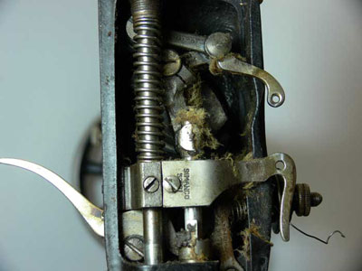
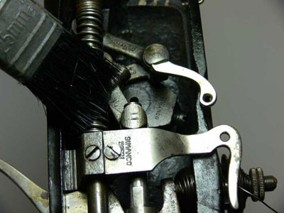
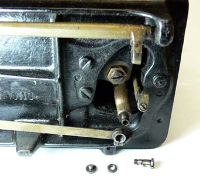
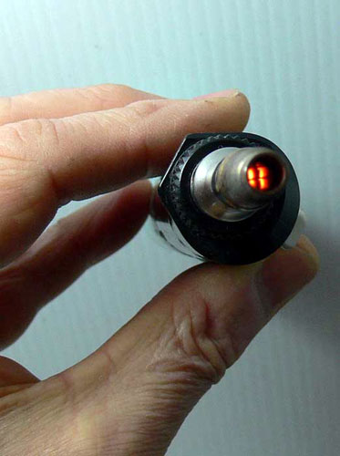
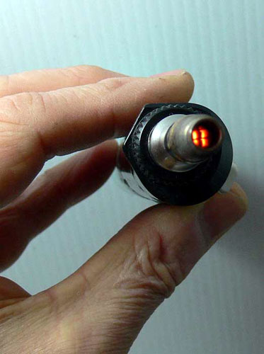
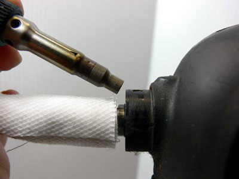
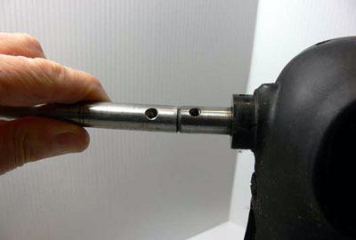
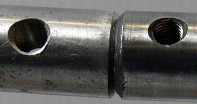

Machine Seized
By Les Godfrey
Recently there have been some posts in the NeedleBar Forum regarding seized machines, and so I thought I’d share with you my method of cleaning or finding where the problem is located. Now let’s assume our imaginary machine has been taken out of its base or cabinet and we have it sitting on the bench in front of us, with good lighting, so pull up a seat and we’ll go through the procedure together.
When faced with the difficulty of
a seized machine firstly take your time, be patient, don’t rush at it,
jumping from one area to another, our approach must be methodical. In this scenario
our machine has an unknown history, we have no idea of its previous use, or
how it has been looked after, it’s just come into our possession. Let’s
study the machine, look it over, its general appearance is going to tell us
a great deal about its past and its present condition. How much work it has
done, whether it has been used in a long time, is it covered in gunk, what about
rust, does anything appear to be bent? Check the hand wheel, does it look straight,
does it look to be at 90 degrees to the shaft? A quick glance at the thread
take up lever, is it hard up against the casting? Does the presser foot line
up? Look for cracks, dents anything to suggest it may have been dropped. The
more you look the more you see (Grandad). OK for our scenario it’s got
some rust and it is filthy!!
Time to start, remove all covers: face plate, needle plate, slide plate, rear cover and top cover, if it has one, and motor belt if electric, don’t worry about cleaning and oiling just yet. Now remove the hook or shuttle mechanism, with any luck we have just found the problem, I wish, I hear you say!!
Gently with the hand wheel try and move the machine back and forth, in a rocking action, at the same time watch closely the different mechanisms and shafts for the slightest sign of movement, check every part of the machine for signs. This is a preliminary check and with any luck will locate the problem for us, or at least indicate whether it is at the top or bottom half of the machine. Suppose we spot some faint movement in the needle bar, this indicates that the top shaft, thread take up and needle bar are more than likely free and that the problem is at the bottom of the machine. Should a slight movement be detected on the lower part of the machine the reverse is probably true. Tip: the disengaging knob on the hand wheel will need to be continually tightened during this procedure.
No luck? OK, time to start the cleaning process, a good washout comes first get a tub (a small plastic ice cream container is perfect for this) and a 1 inch/25mm paint brush, cut about ½ inch/13mm off the bristles of a new brush to make it good and stiff. I recommend kerosene as the cleaning agent, it works in two ways, it dissolves the dirt and gummed up oil and also acts as a penetrating lubricate. Far cheaper than WD40 to use and it will not harm the paint work if wiped up with a dry rag, you don’t need to panic here as long as you don’t leave it on the machine surface for lengthy periods such as overnight. Test the paint or finish in an inconspicuous area if you are not sure or are at all concerned. Pour the kerosene into your tub to approximately 1 inch/25mm deep, dip in your brush and start scrubbing down the mechanics of the machine.
Start at the top shaft right bearing
and work your way across to the left bearing, next the needle bar, needle bar
frame, presser bar and thread take up mechanism. I usually rock the hand wheel
continually as I go, this has two effects, testing for movement and helping
to get the kerosene into and between the parts, hopefully speeding up the process
of freeing the machine up. The stitch length regulator comes next and finally
the lower sections of the machine, starting with the hook drive or the shuttle
carrier, working meticulously through the lower shafts and feed mechanism. 
Starting at the top helps speed up the process as the kerosene will run down into the lower sections starting to soften up the gunk. Once the general cleaning is complete you can concentrate on any rust areas that were found during our preliminary inspection, the kerosene will work quickly breaking down the rust and helping to dissolve it. These parts may need additional work later to make them more presentable if badly pitted.
Well, hopefully by now we will see that the machine is starting to free up and although tight it is starting to turn over. Once any movement is obtained give the whole machine a good liberal dose of clean kerosene and keep working that hand wheel back and forth, at no time force the machine, the hand wheel should give you enough leverage to get things moving. Remember at this point we do not know there is anything else wrong to cause the machine to seize and that this is the first stage of the procedure. Once we have spent some time going through this step of trying to get the machine freed up and we have had no luck, and it is still stuck fast, what next? Pack up, wipe the paint work down with a clean dry rag, clean up your bench and leave the machine to stand, let the kerosene do its work.
Let’s go and have a cup of tea or coffee, lunch/dinner, take a good long break. Do not continue. The last thing we need is to keep trying and getting ourselves frustrated. That, my friends, is when things start to go horribly wrong. I’ll say no more.
Feeling refreshed and more importantly with a fresh outlook, time to inspect the machine. Well what do you know, it's working slowly but surely, it's starting to move, yes it's getting better by the minute, keep working it, yes nearly, Wow!! Got it!!
OK back to reality it's just not any better. Sorry to get your hopes up, but it’s time for a second inspection repeating what we did earlier, rocking that hand wheel back and forth and observing, looking for the slightest hint of movement. If it’s late in the day apply some more kerosene and leave it overnight, these things should not be rushed.
If the overnight treatment has had no effect, then we do have a problem, now this just makes it more interesting and the challenge more enjoyable. Stay positive. Do not force anything, we still do not know what is really causing our problem and forcing the issue could make matters worst. OK again another inspection, work the hand wheel and pray. Nothing! OK, Stage Two begins.
Only after the above steps have been taken and all else has failed do we proceed. Now the quickest way to locate the problem area is to isolate the upper and lower mechanisms, we want to narrow down our search. This is achieved by disconnecting the links, rods, shafts or timing belt connecting the two halves of the machine, it is more easily done from the bottom rather than the top of the machine. Straight away you will know whether the problem is in the top or bottom sections, usually one or the other will be as free as a bird, thus eliminating 50% of the machine in one go.
If the problem is at the top then the top shaft and bearings would be the first place to look, next the needle bar and thread take up. We are still not sure, but we have to make a start somewhere, loosen off the needle bar, hold it by the needle clamp and rotate or twist the needle bar trying to push it up or pull it down. If it will not move this could well be our problem. OK the needle bar will not move what about the machine, will it move? Let’s try, the link is still loose and so if the rest of the machine is OK it should move, shouldn’t it, Bingo!! At last!!
 However,
if the upper mechanism will still not move we could have more than one problem
area. First things first we need to get the upper mechanism free and then we
can concentrate on the needle bar. Leave the link loose, time for the rocking
motion on the hand wheel again and another application of kerosene. If after
some time things are not working out take another break, avoid frustration at
all costs. At this stage any problem is likely to be more involved and may require
some further dismantling and re-testing as we proceed, we now need to isolate
the top shaft. Dismantle the thread take up lever from the crank and then check
to see if it is free to move, OK all that is left now is the shaft running through
its bearings, as the kerosene has had no effect up to this point it's time for
a new approach.
However,
if the upper mechanism will still not move we could have more than one problem
area. First things first we need to get the upper mechanism free and then we
can concentrate on the needle bar. Leave the link loose, time for the rocking
motion on the hand wheel again and another application of kerosene. If after
some time things are not working out take another break, avoid frustration at
all costs. At this stage any problem is likely to be more involved and may require
some further dismantling and re-testing as we proceed, we now need to isolate
the top shaft. Dismantle the thread take up lever from the crank and then check
to see if it is free to move, OK all that is left now is the shaft running through
its bearings, as the kerosene has had no effect up to this point it's time for
a new approach.
Moving on to Stage Three, from our initial examination everything seemed to line up correctly no signs of the top shaft having moved. We now have two methods we can employ to get things moving, heat or impact. Heat would always be my first choice, if the machine has seized for no other reason than lack of use, heat should work, note it will not work if something is bent or misaligned.
How to apply the heat? I use a small hand held Weller gas soldering iron with a heating nozzle fitted where the soldering tip would normally be. This creates a focused heat source about the thickness of a ball point pen. I have read that others here have been successful using a hairdryer and so you can see that extreme heat is not necessary, we certainly don’t need to see parts glowing red. How does heat help? By expanding the metal and thereby breaking the bond between the two surfaces.
Initially let's heat up the top shaft at both ends near the bearings just enough to feel hot to the touch, not warm, whilst still hot work some kerosene or use WD40 if you prefer into the bearings and start rocking that hand wheel, hopefully it will come free almost immediately. If we are still not successful try again, no good? OK this time place water soaked rags around the shaft at both ends near the bearings, but not touching them and this time apply heat directly to the bearings. We are attempting to expand the bearing whilst keeping the shaft cool, this should allow the kerosene to penetrate into the bearings and also break the bond between the two metals. Ensure the rags are kept wet when applying heat, this stops the shaft from heating up.
If we decide to use impact we will need a large punch, an old shaft about ½ inch/13mm is perfect for this. The best practice here is to use a punch as close as possible to the size of the part being worked on, but no larger. This method should only be used as a last resort, great care should be used when attempting this technique. We need to apply a sharp impact effect to the top shaft, from our present situation the easiest approach would be from the hand wheel end, this will result in less dismantling than from the other end. Remove the hand wheel, place your punch hard up against the end of the top shaft and keeping it in inline with the shaft, this is important as we need to spread the impact over the entire surface area of the end of the shaft. With a hammer inflict a sharp hard blow, do not go the sledge hammer, the bigger the better mentality, a standard workshop hammer is all that you will need.

I doubt whether you will need to use this method, but sometimes it combines well with the heat treatment.
Should the problem be in the lower half check any gearing and shafts, test the feed carriage in its entirety for binding. Work your way through the lower section of the machine cleaning and testing as you go, much the same as for the top half.
Going about your inspection in this way, you should be able to find and resolve most problems. There are so many scenarios with possible causes, far too many to mention here. A thorough and gentle cleaning as described above will normally free up 95% of machines, even the most stubborn.
Take your time don’t rush it, don’t expect to get the job done in a couple hours, although sometimes you will be amazed at how fast you get a result. Remember it probably took years for the machine to get in this condition. Depending on the situation and the problem you are faced with other methods can be employed, such as drilling. It comes down to problem solving.
One last thing. When dismantling a machine always lay your parts out neatly with the correct screws, nuts, and washers, this is even more important if you are unfamiliar with the particular machine, you’ll be surprised at how poor your memory is when it comes time to reassembling.
Hope this will be of some help or at least give you enough confidence to attempt this type of repair.
© Les Godfrey 2008